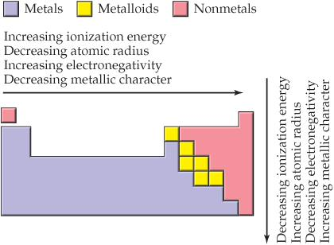
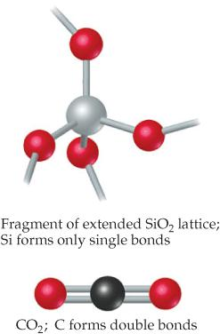
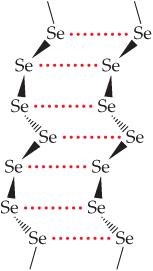
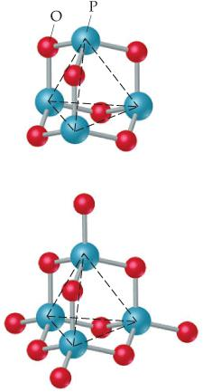
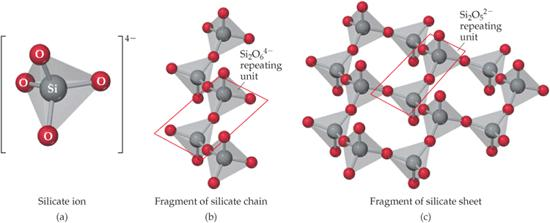
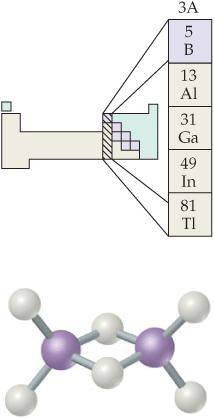

Química de los no metales
title: “Química de los no metales”
Introducción
Los diecisiete elementos no metálicos ocupan la franja derecha de la tabla periódica y, pese a ser una minoría del catálogo elemental, protagonizan la química de la atmósfera, de los seres vivos y de los materiales que nos rodean (Brown et al. 2012, sec. 22.1). Su estudio cierra el viaje sistemático por los grupos que iniciamos con los metales representativos; ahora veremos cómo la electronegatividad elevada, los radios pequeños y la tendencia a compartir electrones generan una química predominantemente covalente y molecular (Pauling 1988, cap. 7).
A diferencia de los metales, que ceden electrones para formar cationes, los no metales ganan electrones o los comparten para completar su octeto, y por ello sus compuestos suelen ser gases, líquidos volátiles o sólidos con redes covalentes (Brown et al. 2012, sec. 22.1). Esta diferencia de comportamiento se refleja en el carácter iónico de los compuestos metal-no metal, como el cloruro de sodio, frente al carácter molecular de los compuestos no metal-no metal, como el dióxido de carbono (Pauling 1988, sec. 8–5).
La riqueza del bloque se debe a tres motivos: el traslape eficaz de los orbitales 2p permite enlaces múltiples fuertes en la primera fila, los elementos del tercer periodo expanden su octeto, y el carbono encadena átomos consigo mismo con energía C–C de 348 kJ/mol frente a los 226 kJ/mol del enlace Si–Si (Pauling 1988, sec. 7–1; Brown et al. 2012, sec. 22.10). Sobre estas tendencias avanzaremos grupo por grupo, del hidrógeno al boro.
Tendencias periódicas y tipos de enlace
La posición de los no metales al final de cada periodo les confiere electronegatividades altas y energías de ionización elevadas, condiciones que favorecen la adquisición de electrones y la formación de enlaces covalentes entre ellos (Brown et al. 2012, sec. 22.1). Cuando la diferencia de electronegatividad es grande, el par compartido se desplaza hacia el elemento más electronegativo y el enlace adquiere carácter iónico; cuando es pequeña, el enlace es covalente no polar y la molécula tiende a ser estable y poco reactiva (Pauling 1988, sec. 7–1).

La diagonal que separa metales, metaloides y no metales permite clasificar de un vistazo el compuesto esperado: los elementos a la izquierda y abajo forman óxidos básicos e hidróxidos, mientras que los de la derecha y arriba forman óxidos ácidos y oxiácidos (véase Figura 22.1) (Brown et al. 2012, sec. 22.1). Los metaloides, como el silicio y el arsénico, ocupan la frontera y exhiben un comportamiento intermedio que estudiaremos en detalle al abordar el grupo del carbono (Brown et al. 2012, sec. 22.10).
Las diferencias dentro de una misma familia explican por qué el dióxido de carbono es un gas molecular mientras que el dióxido de silicio es un sólido con red covalente tridimensional (Brown et al. 2012, fig. 22.3). La comparación resulta de la fortaleza relativa de los enlaces simples C–C y Si–Si frente a los dobles enlaces del carbono y los enlaces Si–O, como ilustra Figura 22.2.

La consecuencia pedagógica de esta comparación es doble: primero, demuestra que la química de un elemento no se deduce por simple extrapolación vertical del grupo, y segundo, justifica que dediquemos secciones separadas al carbono y al silicio (Brown et al. 2012, secs. 22.9, 22.10). Con estas herramientas de clasificación, iniciamos el recorrido por el elemento más abundante del universo.
El hidrógeno
El hidrógeno, descubierto de forma aislada por Henry Cavendish en el siglo XVIII y bautizado por Lavoisier como «productor de agua», constituye cerca del 75 % de la masa del universo aunque apenas el 0.87 % de la masa terrestre (Brown et al. 2012, sec. 22.2). El agua, el compuesto más importante del elemento, contiene 11 % de hidrógeno en masa, y el propio gas diatómico H₂ es incoloro, inodoro y menos denso que el aire, con puntos de fusión y ebullición de −259 °C y −253 °C respectivamente (Brown et al. 2012, sec. 22.2).
\[2\text{H}_2 + \text{O}_2 \rightarrow 2\text{H}_2\text{O} \tag{22.1}\]
La combustión de Ecuación 22.1 es vigorosa y la mezcla de hidrógeno con aire resulta explosiva cuando la concentración de H₂ supera el 4 % en volumen, motivo por el cual su manejo exige extremas precauciones, mientras que la misma reacción impulsa los motores de los cohetes espaciales, cuyos tanques almacenan hidrógeno y oxígeno líquidos (Brown et al. 2012, sec. 22.2). La energía del enlace H–H, de 436 kJ/mol, supera con creces la del enlace Cl–Cl, de 242 kJ/mol, de modo que el hidrógeno molecular es relativamente poco reactivo a temperatura ambiente y exige calor, luz o catalizadores para participar en reacciones (Brown et al. 2012, sec. 22.2).
Tres isótopos naturales del elemento coexisten en proporciones muy desiguales: el protio, con un solo protón y 99.9844 % de abundancia; el deuterio, con un neutrón añadido y 0.0156 % de abundancia; y el tritio, radiactivo con un período de semidesintegración de 12.3 años y trazas despreciables (Brown et al. 2012, sec. 22.2). El deuterio, no radiactivo, altera notablemente las propiedades del agua: el D₂O funde a 3.81 °C, hierve a 101.42 °C y es 11 % más denso que el H₂O, diferencias aprovechadas en reactores nucleares y en estudios de mecanismos de reacción (Brown et al. 2012, sec. 22.2).
La energía de ionización del hidrógeno, 1312 kJ/mol, es más del doble de la del litio (520 kJ/mol), mientras que su afinidad electrónica, de solo −73 kJ/mol, no alcanza la de ningún halógeno, de modo que el elemento no se asemeja más a los halógenos que a los metales alcalinos, cifras que anticipan su química intermedia entre metales y no metales (Brown et al. 2012, sec. 22.2). En consecuencia, el hidrógeno forma enlaces covalentes con los no metales, hidruros iónicos con los metales muy activos y compuestos intersticiales con muchos metales de transición (Brown et al. 2012, sec. 22.2).
El hidruro iónico es un compuesto salino entre hidrógeno y un metal alcalino o alcalinotérreo activo, como el hidruro de sodio NaH o el hidruro de calcio CaH₂, que se preparan calentando el metal en corriente de H₂ y contienen el ion hidruro H⁻ (Brown et al. 2012, sec. 22.2). Estos sólidos iónicos reaccionan violentamente con el agua liberando hidrógeno molecular y formando el hidróxido del metal, una propiedad que los convierte en reductores versátiles y en fuentes portátiles de H₂ (Brown et al. 2012, sec. 22.2).
El hidruro metálico, también llamado intersticial, se forma cuando el hidrógeno caliente se disuelve en el metal y ocupa los huecos de la red sin alterar su estructura, como ocurre con el paladio o con la aleación FeTi que almacena hidrógeno en forma de FeTiH₂ (Brown et al. 2012, cap. 22). El hidruro molecular, por último, es el compuesto covalente del hidrógeno con un no metal: agua, amoníaco, metano y cloruro de hidrógeno, cuya polaridad y fuerza de enlace dependen de la electronegatividad del compañero (Brown et al. 2012, sec. 22.2).
El H₂ se produce en el laboratorio haciendo reaccionar un metal activo con un ácido y, a escala industrial, por tres vías principales: la reacción del metano con vapor de agua a 1100 °C, el proceso del gas de agua con carbono caliente a 1000 °C seguido de la conversión con más vapor sobre hierro, y la electrólisis de la salmuera, que lo produce como subproducto (Brown et al. 2012, sec. 22.2). El destino mayoritario del hidrógeno industrial es la síntesis de amoníaco del proceso Haber, seguida del craqueo de hidrocarburos del petróleo y de la síntesis de metanol, y su uso como combustible espacial con oxígeno líquido (Brown et al. 2012, sec. 22.2).
Gases nobles
Los gases nobles cierran cada periodo con la configuración de octeto completo y, durante décadas, fueron considerados químicamente inertes hasta que en 1962 se sintetizó el primer compuesto de xenón (Brown et al. 2012, sec. 22.3). El helio, el neón y el argón no forman compuestos estables; el criptón y el xenón reaccionan con los donadores de electrones más agresivos, principalmente el flúor y el oxígeno, en condiciones que dependen de la facilidad con que cada uno pierde electrones de valencia (Brown et al. 2012, sec. 22.3).
\[\text{Xe} + 2\text{F}_2 \rightarrow \text{XeF}_4 \tag{22.2}\]
La reacción de Ecuación 22.2 produce el tetrafluoruro de xenón, un sólido blanco de estructura cuadrada plana en la que el xenón, con 12 electrones alrededor, se rodea de cuatro enlaces y dos pares no enlazantes opuestos (Brown et al. 2012, sec. 22.3). Variando las proporciones de los reactivos se obtienen también XeF₂ y XeF₆, y la hidrólisis de estos fluoruros genera compuestos con oxígeno como el trióxido de xenón, de modo que la química del xenón es la más extensa de todos los gases nobles (Brown et al. 2012, sec. 22.3).
El difluoruro de criptón KrF₂ es el único compuesto binario estable del criptón y se descompone lentamente incluso a −10 °C, mientras que los compuestos del radón son escasos y efímeros por la radiactividad del elemento (Brown et al. 2012, secs. 22.3, 21.9). En el plano aplicado, el helio licua a 4.2 K y sirve de refrigerante y de gas de llenado de globos (Brown et al. 2012, sec. 22.3).
El argón, relativamente abundante, inunda lámparas incandescentes y protege la soldadura del acero inoxidable, mientras que el neón, el criptón y el xenón se obtienen por destilación fraccionada del aire líquido (Brown et al. 2012, sec. 22.3). Esta familia demuestra que incluso el octeto más estable puede ceder ante el flúor, el elemento más electronegativo de la tabla, y nos conduce directamente a los halógenos (Brown et al. 2012, sec. 22.4).
Halógenos e interhalogenados
Los halógenos del grupo 7A comparten la configuración de valencia ns²np⁵ y la tendencia a captar un electrón para completar el octeto, aunque solo el flúor se limita al estado de oxidación −1 (Brown et al. 2012, sec. 22.4). El cloro, el bromo y el yodo alcanzan estados positivos de +1 a +7 al combinarse con el oxígeno o el flúor, y su reactividad y poder oxidante decrecen al descender por el grupo: el flúor desplaza al cloro de sus sales, y el cloro al bromo, en la serie F₂ > Cl₂ > Br₂ > I₂ (Brown et al. 2012, sec. 22.4).
La presentación física de la familia es una lección de periodicidad: el F₂ es un gas amarillo pálido, el Cl₂ un gas amarillo verdoso, el Br₂ un líquido rojo oscuro y el I₂ un sólido gris-negro cuyo vapor es violeta (Pauling 1988, sec. 7–1). El flúor debe su extraordinaria reactividad al enlace F–F particularmente débil, de solo 155 kJ/mol, y ataca incluso al cobre y al níquel, que únicamente resisten porque la capa de fluoruro formada los protege del ataque posterior (Brown et al. 2012, sec. 22.4).
Históricamente, el cloro fue obtenido por Scheele en 1774 haciendo reaccionar dióxido de manganeso con ácido clorhídrico, mientras que el flúor elemental tuvo que esperar hasta 1886, cuando Moissan lo aisló por electrólisis de fluoruro de potasio disuelto en ácido fluorhídrico líquido (Pauling 1988, sec. 7–1). Hoy el cloro se produce por electrólisis de la salmuera, el bromo se libera de las salmueras marinas y del mar Muerto por oxidación con cloro, y el yodo se extrae de los yodatos del salitre de Chile y de los yoduros de las aguas de pozo (Pauling 1988, sec. 7–1; Brown et al. 2012, sec. 22.4).
El hidrógeno y el fluoruro de hidrógeno merecen mención especial: el HF es un ácido débil en disolución diluida pero corrosivo para el vidrio, porque los iones fluoruro atacan la sílice, mientras que el HCl, el HBr y el HI son ácidos fuertes en agua (Brown et al. 2012, sec. 22.4). Los oxiácidos del cloro forman la serie HClO, HClO₂, HClO₃ y HClO₄, cuya acidez y poder oxidante aumentan con el número de átomos de oxígeno, y el heptóxido de dicloro Cl₂O₇, que se prepara deshidratando el ácido perclórico con pentóxido de fósforo, es el anhídrido de este último (Pauling 1988, sec. 8–1).
El interhalógeno es un compuesto binario de dos halógenos distintos en el que el átomo central más grande y menos electronegativo, típicamente cloro, bromo o yodo, se rodea de tres, cinco o siete átomos de flúor (Brown et al. 2012, sec. 22.4). El yodo forma IF₃, IF₅ e IF₇; el bromo y el cloro se detienen en tres o cinco; y cuando el compañero es el cloro, solo el yodo produce ICl₃ e ICl₅ (Brown et al. 2012, sec. 22.4).
La estequiometría del interhalógeno revela la capacidad del átomo central para expandir su octeto, pues el yodo llega a alojar catorce electrones en el IF₇, mientras el flúor, carente de orbitales d accesibles, nunca actúa como átomo central de una serie semejante (Brown et al. 2012, sec. 22.4). Todos los interhalogenados son oxidantes poderosos y muestran una química propia fascinante, que exploramos con el trifluoruro de bromo, cuyo par solitario y autoionización lo convierten en un protagonista ideal del ejemplo resuelto final (Brown et al. 2012, sec. 22.4, cap. 22).
El trifluoruro de bromo BrF₃, un interhalógeno líquido de color pajizo, conduce la corriente eléctrica porque se autoioniza parcialmente según el equilibrio de la Ecuación Ecuación 22.3. Su análisis integra la geometría molecular, la termodinámica de los equilibrios y la química ácido-base de Lewis en una sola sustancia, y por eso lo retomaremos como ejemplo resuelto al final del capítulo (Brown et al. 2012, cap. 22).
\[2\text{BrF}_3 \rightleftharpoons \text{BrF}_2^+ + \text{BrF}_4^- \tag{22.3}\]
El catión BrF₂⁺ dispone de veinte electrones de valencia repartidos en cuatro dominios, dos enlaces y dos pares solitarios, de modo que su geometría molecular es angular (Brown et al. 2012, cap. 22). El anión BrF₄⁻, con treinta y seis electrones y seis dominios, adopta en cambio una geometría cuadrada plana, con los dos pares no enlazantes en posiciones opuestas (Brown et al. 2012, cap. 22).
La constante del equilibrio de la Ecuación Ecuación 22.3 depende de la temperatura, y la observación de que la conductividad disminuye al calentar indica que la formación de los iones es exotérmica, de acuerdo con el principio de Le Châtelier (Brown et al. 2012, cap. 22). Si se disuelve bromuro de potasio en BrF₃, la conductividad aumenta porque el ion fluoruro actúa como base de Lewis frente al BrF₃, que se comporta como ácido de Lewis y forma BrF₄⁻ (Brown et al. 2012, cap. 22).
Oxígeno, ozono y los calcógenos
El oxígeno, el calcógeno más abundante en la corteza terrestre, forma dos alótropos: el dioxígeno O₂, paramagnético y soporte de la respiración, y el ozono O₃, un gas azul pálido de olor penetrante (Brown et al. 2012, sec. 22.5). El ozono es detectable a 0.01 ppm y, entre 0.1 y 1 ppm, produce dolor de cabeza, irritación ocular y dificultades respiratorias, lo que lo convierte en un componente tóxico del smog urbano (Brown et al. 2012, sec. 22.5).
El ozono es un oxidante mucho más fuerte que el O₂: oxida todos los metales comunes excepto el oro y el platino y, por ello, se emplea para potabilizar agua, fabricar fármacos y lubricantes sintéticos y romper los dobles enlaces carbono-carbono (Brown et al. 2012, sec. 22.5). Se prepara haciendo pasar una descarga eléctrica a través de O₂ seco, como ocurre en las tormentas, y no puede almacenarse porque se descompone espontáneamente, proceso que catalizan la plata, el platino, el paladio y los óxidos de metales de transición (Brown et al. 2012, sec. 22.5).
En la estratosfera, la capa de ozono filtra la radiación ultravioleta solar, mientras que en la baja atmósfera el mismo compuesto se considera un contaminante perjudicial (Brown et al. 2012, sec. 22.5). Los óxidos de los no metales son, en su mayoría, sustancias moleculares covalentes que reaccionan con agua para dar oxiácidos, por lo que se denominan anhídridos ácidos: el SO₂ produce ácido sulfuroso, el SO₃ produce ácido sulfúrico y el CO₂ produce ácido carbónico, reacciones responsables de la lluvia ácida y de la acidez natural de las aguas (Brown et al. 2012, sec. 22.5).
Los óxidos de los metales, en cambio, son iónicos y básicos: el óxido de bario reacciona con agua dando hidróxido de bario, y los óxidos insolubles se disuelven en ácidos, de modo que el carácter ácido-base del óxido predice el de su hidróxido (Brown et al. 2012, sec. 22.5). Ciertos óxidos son anfóteros y reaccionan tanto con ácidos como con bases, y su carácter básico disminuye cuando el metal alcanza estados de oxidación elevados (Brown et al. 2012, sec. 22.5).
La combustión de los metales activos puede detenerse en el peróxido, compuesto con el enlace O–O y el oxígeno en estado −1 como el Na₂O₂, el CaO₂, el SrO₂ y el BaO₂, o incluso en el superóxido, que contiene el ion O₂⁻ como el KO₂, el RbO₂ y el CsO₂ (Brown et al. 2012, sec. 22.5). El superóxido de potasio se utiliza en las máscaras de rescate de los mineros porque reacciona con la humedad del aire respirando para liberar O₂ mientras el hidróxido de potasio formado elimina el CO₂, un ingenioso ciclo químico de soporte vital (Brown et al. 2012, sec. 22.5).
Descendiendo al grupo 6A, el azufre, el selenio y el telurio comparten la configuración ns²np⁴ y estados de oxidación de −2 hasta +6 con expansión del octeto en hexafluoruros como SF₆, SeF₆ y TeF₆ (Brown et al. 2012, sec. 22.6). El azufre nativo se encuentra en depósitos subterráneos y en el carbón y el petróleo, donde su oxidación al quemar los combustibles libera dióxido de azufre a la atmósfera; el elemento cristaliza en anillos plegados de ocho átomos S₈ y se usa masivamente en la vulcanización del caucho y en la fabricación de ácido sulfúrico (Brown et al. 2012, sec. 22.6).
El selenio y el telurio, en cambio, prefieren cadenas helicoidales en sus alótropos cristalinos en lugar de anillos de ocho, como muestra Figura 22.3. El selenio es un fotoconductor: su conductividad eléctrica aumenta cuando lo ilumina la luz, propiedad que lo hace indispensable en las fotocopiadoras y en las celdas fotoeléctricas, mientras que sus compuestos con el telurio aparecen en minerales raros asociados a cobre y plomo (Brown et al. 2012, sec. 22.6).

El ion sulfuro S²⁻ forma minerales importantes como la galena PbS y el cinabrio HgS, mientras que el disulfuro S₂²⁻, análogo del peróxido, da lugar a las piritas como el FeS₂, el famoso «oro de los tontos» (Brown et al. 2012, sec. 22.6). El sulfuro de hidrógeno, preparado haciendo reaccionar sulfuro de hierro con un ácido diluido, huele a huevos podridos y resulta extremadamente tóxico, aunque su olor se detecta a concentraciones inofensivas, a diferencia del dimetilsulfuro, perceptible a una parte por trillón (Brown et al. 2012, sec. 22.6).
El dióxido de azufre, gas sofocante y venenoso que se emplea para esterilizar frutas secas y vino, es bastante soluble en agua (1.6 M a 1 atm) y da lugar al ácido sulfuroso y sus sales, los sulfitos y bisulfitos (Brown et al. 2012, sec. 22.6). La combustión del azufre produce casi exclusivamente SO₂ porque la oxidación adicional a SO₃ tiene una barrera de activación alta, de modo que la fabricación industrial del ácido sulfúrico debe oxidar el SO₂ en presencia de un catalizador de óxido de vanadio(V) o platino y disolver el SO₃ resultante en ácido sulfúrico concentrado, no en agua (Brown et al. 2012, sec. 22.6).
El producto de la disolución es el ácido pirosulfúrico H₂S₂O₇, que luego se hidrata para dar el H₂SO₄ final, el producto químico de mayor tonelaje mundial y famoso por su capacidad de deshidratar el azúcar carbonizándolo (Brown et al. 2012, sec. 22.6). Pauling describe además el proceso histórico de las cámaras de plomo, que empleaba como intermediario el sulfato ácido de nitrosilo NOHSO₄, una alternativa anterior al proceso de contacto hoy dominante (Pauling 1988, sec. 8–2).
El ácido sulfúrico, con punto de ebullición de 330 °C, desplaza al ácido nítrico de sus sales, base de la fabricación clásica del HNO₃, y ambas descripciones del proceso coexisten porque responden a épocas y escalas industriales distintas del mismo producto, no a un desacuerdo químico (Pauling 1988, sec. 8–2).
Nitrógeno y sus compuestos
El nitrógeno fue aislado por Rutherford en 1772 y constituye el 78 % de la atmósfera, de donde se obtiene por destilación fraccionada del aire líquido (Brown et al. 2012, sec. 22.7). Su molécula N₂, unida por un triple enlace de 941 kJ/mol casi el doble que el del O₂, explica que el elemento sea tan inerte a temperatura ambiente; sin embargo, el litio y el magnesio queman en nitrógeno formando nitruros como Li₃N y Mg₃N₂, y estos compuestos reaccionan con agua dando amoníaco, porque el ion N³⁻ es una base muy fuerte (Brown et al. 2012, sec. 22.7).
El amoníaco NH₃, molécula piramidal con un par no enlazante, es una base débil cuya constante de basicidad vale 1.8×10⁻⁵, y se prepara en el laboratorio calentando una sal de amonio con hidróxido de sodio (Brown et al. 2012, sec. 22.7). Industrialmente se sintetiza por el proceso Haber de la Ecuación Ecuación 22.4, que combina nitrógeno e hidrógeno a alta presión sobre un catalizador de hierro; la mayor parte del hidrógeno mundial, unos 5×10¹⁰ kg anuales, se destina a esta síntesis, y las tres cuartas partes del amoníaco producido fertilizan los cultivos (Brown et al. 2012, secs. 22.2, 22.7).
\[\text{N}_2 + 3\text{H}_2 \rightleftharpoons 2\text{NH}_3 \tag{22.4}\]
El amoníaco puede oxidarse a la hidrazina N₂H₄, líquido venenoso y reductor fuerte que impulsa los cohetes, y reacciona con los hipocloritos dando cloramina NH₂Cl, por lo que nunca deben mezclarse la lejía y el amoníaco domésticos (Brown et al. 2012, sec. 22.7). La hidroxilamina NH₂OH, otro derivado, reduce los iones Cu²⁺ a cobre metálico y sirve para distinguirlos de los iones que no se reducen (Brown et al. 2012, sec. 22.7).
Entre los óxidos del nitrógeno, el óxido nitroso N₂O, obtenido calentando nitrato de amonio, es el «gas de la risa» que se usó como primer anestésico general y hoy propulsa aerosoles; el óxido nítrico NO, formado al reaccionar cobre con ácido nítrico diluido o por combinación de N₂ y O₂ a temperaturas altas, actúa como neurotransmisor y se genera en los motores de combustión (Brown et al. 2012, sec. 22.7). El dióxido de nitrógeno NO₂, gas amarillo-marrón venenoso del smog, se encuentra en equilibrio con su dímero incoloro N₂O₄, y su hidrólisis desproporciona en ácido nítrico y óxido nítrico (Brown et al. 2012, sec. 22.7).
El ácido nítrico se produce a escala industrial por el proceso Ostwald, en el que el amoníaco se oxida catalíticamente a NO, que reacciona con el oxígeno del aire dando NO₂, y este se hidroliza en agua para formar HNO₃ (Brown et al. 2012, sec. 22.7). El ácido nítrico es un ácido fuerte y un oxidante poderoso que ataca a la mayoría de los metales excepto el oro, el platino, el rodio y el iridio, y sus cerca de 7×10⁹ kg anuales se destinan sobre todo a fabricar el nitrato de amonio, fertilizante y explosivo (Brown et al. 2012, sec. 22.7).
El ácido nitroso HNO₂, por su parte, es un ácido débil con Ka de 4.5×10⁻⁴ que se descompone en NO y HNO₃, y sus sales, los nitritos, son conservantes alimentarios (Brown et al. 2012, sec. 22.7). Con la química del nitrógeno y sus óxidos cerramos la familia de la segunda fila y pasamos al fósforo, su compañero del tercer periodo (Brown et al. 2012, sec. 22.8).
Fósforo, arsénico y sus congéneres
El fósforo, el arsénico, el antimonio y el bismuto comparten la configuración ns²np³, pero el comportamiento elemental difiere notablemente: solo el nitrógeno de este grupo existe como molécula diatómica con enlace triple, y únicamente el bismuto se comporta como metal (Brown et al. 2012, sec. 22.8). El fósforo elemental se presenta como P₄, cuyos átomos forman tetraedros con ángulos de 60° que imponen una tensión enorme al enlace, responsable de que el fósforo blanco se inflame espontáneamente en el aire, deba almacenarse bajo agua y sea muy venenoso (Brown et al. 2012, sec. 22.8).
Calentado sin aire a unos 400 °C, el fósforo blanco se transforma en fósforo rojo, un polímero que no arde espontáneamente y es mucho menos tóxico (Brown et al. 2012, sec. 22.8). Industrialmente, el fósforo se obtiene reduciendo el fosfato de calcio mineral con carbono y sílice a alta temperatura, proceso que destila el P₄ blanco, y el elemento se combina con los halógenos para dar haluros como PCl₃ y PCl₅ (Brown et al. 2012, sec. 22.8). Estos haluros se hidrolizan en agua produciendo un oxiácido y un haluro de hidrógeno, y sirven de materia prima para detergentes, plásticos e insecticidas (Brown et al. 2012, sec. 22.8).
La oxidación controlada del fósforo con cantidades limitadas de oxígeno produce P₄O₆, el anhídrido del ácido fosforoso H₃PO₃, un ácido diprótico; con exceso de oxígeno se obtiene P₄O₁₀, el anhídrido del ácido fosfórico y uno de los mejores agentes desecantes conocidos (Brown et al. 2012, fig. 22.28). La diferencia entre ambos óxidos se aprecia en Figura 22.4, y la capacidad del P₄O₁₀ de condensar los oxiácidos explica que el calentamiento de dos moléculas de H₃PO₄ genere ácido pirofosfórico y agua según Ecuación 22.5.

\[2\text{H}_3\text{PO}_4 \rightarrow \text{H}_4\text{P}_2\text{O}_7 + \text{H}_2\text{O} \tag{22.5}\]
Los fosfatos despliegan una química aplicada notable: el tripolifosfato de sodio Na₅P₃O₁₀ ablanda el agua formando complejos con los iones calcio y magnesio, y por ello fue un ingrediente central de los detergentes antes de su restricción ambiental (Brown et al. 2012, sec. 22.8). El fosfato de calcio Ca₃(PO₄)₂ es tan insoluble, con Kps de 2.0×10⁻²⁹, que su aplicación directa como fertilizante fracasa; el tratamiento con ácido sulfúrico o fosfórico lo convierte en hidrogenofosfato de calcio soluble Ca(H₂PO₄)₂ (Brown et al. 2012, sec. 22.8).
En bioquímica, los fosfatos forman parte del esqueleto del RNA y del DNA y del trifosfato de adenosina, cuya hidrólisis libera unos 57 kJ mol⁻¹ en las células, de manera que una persona promedio metaboliza diariamente el equivalente a su propio peso corporal de ATP (Brown et al. 2012, sec. 22.8). El arsénico, vecino del fósforo, se comporta como metaloide y su toxicidad depende fuertemente de la especie química y del ambiente: en aguas aeróbicas predomina el arseniato AsO₄³⁻, mientras que en aguas anaeróbicas aparece el arsenito como H₃AsO₃ (Brown et al. 2012, sec. 22.8).
La Agencia de Protección Ambiental de Estados Unidos limita el arsénico del agua potable a 10 ppb, pero en Bangladés cerca de la mitad de los pozos superan los 50 ppb, lo que expone a millones de personas al riesgo de cáncer de pulmón y de vejiga (Brown et al. 2012, sec. 22.8). La química de este elemento demuestra que la especiación, y no solo la concentración total, gobierna el riesgo sanitario de un contaminante (Brown et al. 2012, sec. 22.8).
Carbono
El carbono, con apenas el 0.027 % de la corteza terrestre y más de la mitad de sus átomos en carbonatos, merece un tratamiento aparte por la singular fortaleza de sus enlaces múltiples y su capacidad de encadenarse consigo mismo (Brown et al. 2012, sec. 22.9). En el diamante, cada carbono hibridado sp³ se une a otros cuatro en una red covalente tridimensional de densidad 3.51 g/cm³, mientras que en el grafito las láminas planas de anillos sp² se deslizan entre sí y conducen la electricidad, alcanzando solo 2.25 g/cm³ (Brown et al. 2012, sec. 22.9).
El grafito se convierte en diamante a unos 100 000 atm y 3000 °C, ruta que permitió producir cerca de 30 000 kg de diamantes industriales al año; el carbon black tiñe tintas y neumáticos, y el carbón activado adsorbe contaminantes en filtros (Brown et al. 2012, sec. 22.9). El monóxido de carbono CO, formado por combustión con oxígeno limitado, es isoelectrónico con el N₂ y posee un enlace triple de 1072 kJ/mol aún más fuerte que el del nitrógeno (Brown et al. 2012, sec. 22.9).
A diferencia del N₂, el CO actúa como base de Lewis coordinándose con el hierro de la hemoglobina y bloqueando el transporte de oxígeno, lo que explica su toxicidad, y esta afinidad produce carbonilos metálicos como el Ni(CO)₄ y hace del CO un reductor metalúrgico eficaz en la obtención del hierro (Brown et al. 2012, sec. 22.9). El dióxido de carbono, en cambio, resulta de la combustión completa, de la descomposición térmica de los carbonatos y de la fermentación, y en el laboratorio se genera haciendo reaccionar un carbonato con un ácido (Brown et al. 2012, sec. 22.9).
El CO₂ es un gas incoloro e inodoro que, aunque no es tóxico, acelera la respiración y provoca sofocación en concentraciones altas, y se licúa por compresión hasta congelarse en el hielo seco, que sublima a −78 °C y domina el mercado de la refrigeración (Brown et al. 2012, sec. 22.9). En agua, el CO₂ forma el ácido carbónico H₂CO₃, un ácido diprótico débil que da las bebidas carbonatadas y cuyas especies sucesivas son el ion hidrogenocarbonato HCO₃⁻, con Ka de 5.6×10⁻¹¹, y el ion carbonato CO₃²⁻, con Kb de 1.8×10⁻⁴ (Brown et al. 2012, sec. 22.9).
Los carbonatos minerales son extraordinariamente comunes: la calcita CaCO₃ forma calizas, mármol, tiza, perlas y conchas; la magnesita MgCO₃ y la dolomita MgCa(CO₃)₂ edifican montañas; y la siderita FeCO₃ es un mineral de hierro (Brown et al. 2012, sec. 22.9). El carbonato de calcio, insoluble en agua pura, se disuelve lentamente en las aguas subterráneas aciduladas por CO₂ disuelto, proceso que esculpe las cuevas y endurece el agua, y al calcinarse se descompone en cal viva CaO y CO₂, produciendo unos 2×10¹⁰ kg anuales de cal para la construcción (Brown et al. 2012, sec. 22.9).
La cal viva reacciona con agua formando el hidróxido de calcio de los morteros, que endurecen al captar CO₂ del aire y regenerar carbonato de calcio que une la arena (Brown et al. 2012, sec. 22.9). Los carburos completan el cuadro: los iónicos contienen el ion acetiluro C₂²⁻, isoelectrónico con el N₂, y el carburo de calcio CaC₂, preparado reduciendo cal con carbono a alta temperatura, libera acetileno al contacto con el agua para la soldadura oxiacetilénica (Brown et al. 2012, sec. 22.9).
Los carburos intersticiales como el WC son durísimos y cortan el acero, y el carburo de silicio SiC, casi tan duro como el diamante y con su misma red alternada, pule las piedras preciosas (Brown et al. 2012, sec. 22.9). El cianuro de hidrógeno HCN, de olor a almendras amargas y extremadamente tóxico, se libera al acidificar los cianuros y es materia prima del nylon, mientras que el ion CN⁻ forma complejos estables con los metales de transición y el disulfuro de carbono CS₂, un solvente inflamable que hierve a 46.3 °C, disuelve ceras y grasas (Brown et al. 2012, sec. 22.9).
Silicio, silicatos, vidrio y siliconas
Descendiendo al grupo 4A, el carbono es no metal, el silicio y el germanio son metaloides, y el estaño y el plomo son metales, y aunque todos comparten la configuración ns²np², el comportamiento se diferencia por la fortaleza de los enlaces homonucleares (Brown et al. 2012, sec. 22.10). Mientras el enlace C–C de 348 kJ/mol permite cadenas y anillos, el enlace Si–Si de solo 226 kJ/mol es mucho más débil que el Si–O de 386 kJ/mol, de modo que la química del silicio está dominada por los enlaces silicio-oxígeno (Brown et al. 2012, sec. 22.10).
El silicio, segundo elemento más abundante de la corteza, se extrae reduciendo la sílice fundida con carbono a alta temperatura, y se purifica convirtiéndolo en tetracloruro volátil, destilando y reduciendo con hidrógeno hasta alcanzar purezas del 99.999999999 % mediante la zona de refinado (Brown et al. 2012, sec. 22.10). Con estructura de diamante, color gris metálico y punto de fusión de 1410 °C, el silicio semiconductor es el corazón de las celdas solares y los circuitos integrados (Brown et al. 2012, sec. 22.10).
Los silicatos se edifican sobre el tetraedro SiO₄⁴⁻, el «bloque de construcción» en el que el silicio (estado +4) se rodea de cuatro oxígenos, y su polimerización genera la asombrosa variedad estructural que ilustra Figura 22.5. Dos tetraedros comparten un vértice en el disilicato Si₂O₇⁶⁻, y el encadenamiento produce los silicatos fibrosos de la enstatita MgSiO₃ (Brown et al. 2012, sec. 22.10).
Las láminas Si₂O₅²⁻ forman el talco Mg₃(Si₂O₅)₂(OH)₂, resbaladizo porque las caras se deslizan, y el ensamblaje tridimensional del cuarzo SiO₂, el más duro, replica la red del diamante (Brown et al. 2012, sec. 22.10). Los asbestos, silicatos fibrosos cuyas cadenas o láminas se enrollan, fueron aislantes térmicos universales hasta que su inhalación se asoció al cáncer de pulmón, y su uso quedó descontinuado, aunque el crisotilo Mg₃(Si₂O₅)(OH)₄ se considera menos peligroso (Brown et al. 2012, sec. 22.10). El ciclosilicato Si₃O₉⁶⁻ cierra la serie de los anillos (Brown et al. 2012, sec. 22.10).

La historia del vidrio se remonta a la fayenza egipcia de hace seis mil años, pero el vidrio genuino de arena, cal y sosa apareció hacia el 2500 a.C., y fue Heródoto quien lo describió como «piedra fundida» (Brock 2015, cap. 11). El cuarzo fundido a unos 1600 °C forma un líquido tan viscoso que al enfriarse no cristaliza, quedando como un sólido amorfo, y la adición de óxido de sodio y óxido de calcio, procedentes del carbonato de sodio y de la caliza que se descomponen al calentar, abarata el proceso dando el vidrio común de sosa y cal (Brown et al. 2012, sec. 22.10).
Los modificadores colorean y ajustan las propiedades del vidrio: el CoO produce el azul profundo del cobalto, el óxido de potasio endurece el vidrio, el óxido de plomo incrementa la densidad y el brillo del cristal, y el B₂O₃ da los borosilicatos Pyrex y Kimax resistentes al choque térmico (Brown et al. 2012, sec. 22.10). Las siliconas son polímeros de cadenas O–Si–O con grupos orgánicos como el metilo colgando, y según el grado de entrecruzamiento se presentan como aceites o como gomas (Brown et al. 2012, sec. 22.10).
No tóxicas y estables frente al calor, la luz, el oxígeno y el agua, las siliconas lubrican, pulen, sellan juntas e impermeabilizan telas: los enlaces Si–O fijan la cadena a la superficie mientras los grupos alquilo hidrofóbicos quedan expuestos (Brown et al. 2012, sec. 22.10). Con esta versatilidad de los enlaces silicio-oxígeno cerramos el grupo del carbono y pasamos al boro, el último no metal de nuestra ruta (Brown et al. 2012, sec. 22.11).
Boro
El boro es el único no metal del grupo 3A y su red covalente extendida funde a 2300 °C, un punto intermedio entre los 3550 °C del carbono y los 1410 °C del silicio que ya anticipa su gran fortaleza estructural (Brown et al. 2012, sec. 22.11). Con configuración [He]2s²2p¹ y tres electrones de valencia, el boro no alcanza el octeto en sus compuestos binarios simples, y esa carencia gobierna toda su química (Brown et al. 2012, sec. 22.11).
Los boranos, compuestos de boro e hidrógeno, ilustran el déficit electrónico: el BH₃ posee solo seis electrones de valencia y, para estabilizarse, se autoasocia formando el diborano B₂H₆, en el que dos puentes de hidrógeno enlazan ambos átomos de boro como muestra Figura 22.6. Puede interpretarse con la teoría ácido-base de Lewis: el par de electrones de un enlace B–H se dona al átomo de boro vecino, y los hidrógenos puente confieren al diborano su reactividad característica (Brown et al. 2012, sec. 22.11).

El diborano es extremadamente reactivo y se inflama espontáneamente en el aire según la Ecuación Ecuación 22.6, un proceso tan exotérmico que la liberación de energía convierte a los boranos en combustibles de cohete (Brown et al. 2012, sec. 22.11; Pauling 1988, sec. 18–6). El balanceo muestra que el boro termina en su óxido B₂O₃ y el hidrógeno en agua, dos productos termodinámicamente muy estables que alimentan la violencia de la combustión (Brown et al. 2012, sec. 22.11).
\[\text{B}_2\text{H}_6 + 3\text{O}_2 \rightarrow \text{B}_2\text{O}_3 + 3\text{H}_2\text{O} \tag{22.6}\]
El anión borohidruro BH₄⁻ y su sal común, el borohidruro de sodio NaBH₄, son reductores de uso cotidiano en el laboratorio, y en ellos la asignación formal de los hidrógenos como H⁻ revela que el boro alcanza el estado de oxidación +3 (Brown et al. 2012, sec. 22.11). El único óxido importante del boro, el B₂O₃, es el anhídrido del ácido bórico H₃BO₃, un ácido tan débil, con Ka de 5.8×10⁻¹⁰, que sus disoluciones sirven de colirio (Brown et al. 2012, sec. 22.11).
Al calentar, el ácido bórico condensa agua para dar ácido tetrabórico H₂B₄O₇, del que procede el borax Na₂B₄O₇·10H₂O, abundante en los depósitos secos de California y usado desde la lavandería hasta la limpieza doméstica por sus disoluciones alcalinas (Brown et al. 2012, sec. 22.11). Con este elemento cerramos el recorrido de los no metales y nos queda integrar todo lo aprendido en un ejemplo que reúna estructura, equilibrio y ácidos de Lewis (Brown et al. 2012, sec. 22.11).
Ejemplo resuelto: el trifluoruro de bromo como integrador
Consideremos el trifluoruro de bromo, un interhalógeno líquido que conduce la electricidad y cuya autoionización responde al equilibrio de la Ecuación Ecuación 22.3, presentado en la sección de halógenos (Brown et al. 2012, cap. 22). En la primera parte del problema se piden las estructuras de Lewis y la geometría molecular de los dos iones producidos; en la segunda, el signo del cambio de entalpía del equilibrio; y en la tercera, la explicación del aumento de conductividad al disolver bromuro de potasio (Brown et al. 2012, cap. 22).
Para el catión BrF₂⁺, contamos veinte electrones de valencia: siete del bromo, siete de cada flúor y uno menos por la carga positiva (Brown et al. 2012, cap. 22). Con el bromo central, dos enlaces Br–F y dos pares no enlazantes, los cuatro dominios se repelen según una disposición tetraédrica, y la geometría molecular resultante es angular, análoga a la del agua (Brown et al. 2012, cap. 22). Para el anión BrF₄⁻, los electrones de valencia son treinta y seis, seis dominios alrededor del bromo con dos pares solitarios que ocupan posiciones opuestas, y la geometría es cuadrada plana (Brown et al. 2012, cap. 22).
La segunda parte usa el principio de Le Châtelier: al aumentar la temperatura, la conductividad del líquido disminuye, lo que indica que el número de iones decrece y el equilibrio se desplaza hacia los reactivos (Brown et al. 2012, cap. 22). Como el calentamiento favorece el lado endotérmico, la formación de los iones a partir de BrF₃ debe ser exotérmica, con ΔH negativa en la dirección de izquierda a derecha de la Ecuación Ecuación 22.3.
En la tercera parte, los iones fluoruro aportados por el bromuro de potasio actúan como base de Lewis y reaccionan con el BrF₃, ácido de Lewis, generando más BrF₄⁻ y, con ello, más portadores de carga, lo que explica el aumento de conductividad (Brown et al. 2012, cap. 22). El ejercicio integra así la teoría de Lewis de los capítulos de enlace, el principio de Le Châtelier del equilibrio y la estructura molecular de la geometría, demostrando que una misma sustancia responde a todas las herramientas que hemos construido (Brown et al. 2012, cap. 22).
Preguntas y ejercicios
Esta sección reúne problemas inspirados en la tipología de Brown et al. (2012) (capítulo 22) y de Pauling (1988) (capítulos 7 y 8), reformulados en enunciados propios y con valores y contextos distintos de los originales, de modo que la resolución exija comprensión y no memoria. Cada pregunta admite una respuesta razonada que se desarrolla en el solucionario final del capítulo, al que puede acudirse después del intento propio.
Clasifique los elementos oxígeno, bario, cobalto, berilio, bromo y selenio como metales, no metales o metaloides, y prediga para cada uno si su óxido será básico, ácido o anfótero, justificando la respuesta con la posición en la tabla periódica y la regla de la diagonal que separa los tres tipos de elemento (Brown et al. 2012, cap. 22).
Explique por qué el nitrógeno existe como N₂ diatómico a temperatura ambiente mientras el fósforo se presenta como P₄ tetraédrico, y razone cuál de los dos elementos forma con más facilidad pentacloruros estables, señalando el papel del octeto expandido y de los orbitales disponibles en cada fila de la tabla periódica (Brown et al. 2012, cap. 22).
Una botella contiene ozono y otra oxígeno puro, ambas sin etiqueta; proponga dos pruebas químicas sencillas que permitan distinguirlas, mencionando qué observaría en cada caso y qué propiedad del ozono aprovecha cada prueba para justificar el resultado esperado, teniendo en cuenta que el ozono descompone los dobles enlaces carbono-carbono (Brown et al. 2012, cap. 22).
Balancee la reacción del carburo de calcio con agua y calcule qué masa de acetileno puede obtenerse a partir de 64 g de CaC₂ puro, indicando el uso industrial del gas, la familia de compuestos a la que pertenece el carburo y el ion que contiene su red cristalina (Brown et al. 2012, cap. 22).
Compare el dióxido de carbono y el dióxido de silicio en cuanto a estado físico, estructura y reacción con agua, y explique la causa electrónica de sus diferencias apelando a las energías de enlace C–C, Si–Si y Si–O, así como a la capacidad de cada elemento para formar enlaces múltiples (Brown et al. 2012, cap. 22).
El trifluoruro de bromo conduce la corriente eléctrica y su conductividad decrece al calentar; el bromuro de potasio disuelto lo hace aún más conductor: interprete ambos hechos con la ecuación de autoionización, determinando el signo del ΔH y el papel que juega el ion fluoruro como base de Lewis frente al BrF₃ (Brown et al. 2012, cap. 22).
Razone por qué el xenón forma compuestos estables con el flúor mientras el argón no, y escriba las fórmulas de los tres fluoruros de xenón conocidos junto con la geometría del tetrafluoruro, empleando la teoría de repulsión de pares de electrones para deducirla (Brown et al. 2012, cap. 22).
Describa con sus propias palabras por qué el azufre se oxida en el aire hasta dióxido y no hasta trióxido, y detalle los pasos industriales que permiten, a pesar de ello, fabricar ácido sulfúrico en grandes cantidades, nombrando el catalizador y el compuesto intermedio H₂S₂O₇ (Brown et al. 2012, cap. 22).
Indique si el ion nitrato puede existir con geometría tetraédrica y explique la diferencia entre las estructuras del nitrato y del fosfato apelando a los orbitales disponibles en la segunda fila, para concluir a qué familia geométrica pertenece cada ion y qué consecuencias tiene esa forma para su bioquímica (Brown et al. 2012, cap. 22).
El ácido fosforoso se formula con tres hidrógenos pero se comporta como diprótico: explique esta discrepancia dibujando mentalmente la estructura de Lewis del H₃PO₃ y justificando cuál de los hidrógenos no es ionizable, indicando qué ácido análogo del mismo grupo es monóprótico (Pauling 1988, cap. 8).
Solucionario
En la primera pregunta, oxígeno y bromo son no metales, selenio es metaloide, bario, berilio y cobalto son metales; el óxido de bario será básico por ser óxido de metal alcalinotérreo, el de berilio anfótero por su posición junto a la diagonal, el de cobalto básico, y los de oxígeno y bromo ácidos (Brown et al. 2012, sec. 22.1). La regla subyacente es que los elementos de la derecha y arriba producen anhídridos ácidos, los de la izquierda y abajo óxidos básicos, y los metaloides de la diagonal óxidos anfóteros (Brown et al. 2012, sec. 22.1).
El nitrógeno permanece diatómico porque su triple enlace de 941 kJ/mol es excepcionalmente fuerte, mientras que el fósforo no puede formar enlaces múltiples eficaces por el mal traslape de sus orbitales 3p y se estabiliza en el tetraedro P₄ (Brown et al. 2012, sec. 22.8). El fósforo forma PCl₅ con octeto expandido gracias a sus orbitales 3d, mientras que el nitrógeno, sin orbitales d accesibles y limitado al octeto, no pasa de NCl₃ (Brown et al. 2012, sec. 22.8).
Para distinguir ozono y oxígeno, se puede hacer burbujear cada gas por una disolución de yoduro de potasio: el ozono oxidará el I⁻ liberando yodo que tiñe de marrón, mientras el oxígeno no producirá cambio; alternativamente, una tira de caucho expuesta al ozono se agrieta por el ataque a los dobles enlaces C=C, mientras el oxígeno la deja intacta (Brown et al. 2012, sec. 22.5). Ambas pruebas explotan el carácter oxidante mucho más enérgico del ozono, que oxida hasta los metales nobles salvo oro y platino (Brown et al. 2012, sec. 22.5).
La reacción del carburo de calcio con agua es CaC₂ + 2H₂O → Ca(OH)₂ + C₂H₂, y con 64 g (un mol) de CaC₂ se obtiene un mol de acetileno, es decir 26 g, el gas de la soldadura oxiacetilénica (Brown et al. 2012, sec. 22.9). El carburo de calcio es un carburo iónico que contiene el ion acetiluro C₂²⁻, isoelectrónico con el N₂ y provisto de un triple enlace (Brown et al. 2012, sec. 22.9).
El CO₂ es un gas molecular lineal de enlaces dobles C=O, soluble en agua como ácido carbónico; el SiO₂ es un sólido de red covalente tridimensional que no se disuelve en agua (Brown et al. 2012, sec. 22.10). La causa electrónica es la fortaleza relativa de los enlaces: el C–C de 348 kJ/mol tolera el doble enlace, mientras el Si–Si de solo 226 kJ/mol es tan débil que el silicio prefiere cuatro enlaces simples Si–O de 386 kJ/mol, dando la red del cuarzo (Brown et al. 2012, sec. 22.10).
La autoionización 2BrF₃ ⇌ BrF₂⁺ + BrF₄⁻ produce los iones que conducen, y como la conductividad decrece al calentar, el calentamiento desplaza el equilibrio hacia la izquierda; por Le Châtelier, el lado favorecido por el calor es el endotérmico, así que la formación de iones es exotérmica con ΔH negativa (Brown et al. 2012, cap. 22). El bromuro de potasio aporta F⁻, base de Lewis que captura el BrF₃ ácido para formar BrF₄⁻ adicional, aumentando el número de iones y la conductividad (Brown et al. 2012, cap. 22).
El xenón, con orbitales 5p menos apretados y menor energía de ionización que el argón, sacrifica electrones frente al flúor y forma XeF₂, XeF₄ y XeF₆; el argón, con su octeto compacto y sus altas energías, no cede electrones a ninguno (Brown et al. 2012, sec. 22.3). El XeF₄ es cuadrado plano, con dos pares no enlazantes opuestos y cuatro flúor en el plano ecuatorial (Brown et al. 2012, sec. 22.3).
El azufre arde a SO₂ porque la oxidación adicional a SO₃ exige romper un enlace fuerte y superar una barrera de activación alta que el calor de la llama no vence sin catalizador (Brown et al. 2012, sec. 22.6). Industrialmente, el SO₂ se oxida sobre óxido de vanadio(V) o platino, el SO₃ se disuelve en H₂SO₄ concentrado formando el pirosulfúrico H₂S₂O₇, y la hidratación final produce el ácido sulfúrico comercial (Brown et al. 2012, sec. 22.6).
El nitrógeno de la segunda fila no dispone de orbitales d y se limita a tres enlaces y un par solitario, de modo que el ion nitrato es plano trigonal; el fósforo, con octeto expandido, adopta la geometría tetraédrica en el fosfato PO₄³⁻ (Brown et al. 2012, sec. 22.8). Por ello, el nitrato pertenece a la familia de los aniones planos y el fosfato a la de los tetraédricos, una distinción estructural que determina su bioquímica (Brown et al. 2012, sec. 22.8).
En el ácido fosforoso H₃PO₃, uno de los tres hidrógenos está unido directamente al fósforo y no al oxígeno; solo los dos hidrógenos de los grupos P–OH son ionizables, por lo que el ácido es diprótico (Pauling 1988, sec. 8–3). Esta estructura, análoga a la del ácido hipofosforoso H₃PO₂ que es monóprótico, recuerda que la fórmula molecular no determina por sí sola la fuerza ni el número de protones ácidos (Pauling 1988, sec. 8–3).
Resumen
Los no metales, con electronegatividades altas y tendencia a compartir electrones, forman compuestos covalentes moleculares excepto cuando se combinan con metales, y sus óxidos ácidos y básicos anticipan el carácter de sus hidróxidos (Brown et al. 2012, sec. 22.1). El hidrógeno se enlaza de tres maneras, iónica, metálica y molecular, y alimenta la síntesis del amoníaco; los gases nobles ceden ante el flúor en los compuestos del xenón y del criptón, y los halógenos oxidan en orden F₂ > Cl₂ > Br₂ > I₂ (Brown et al. 2012, secs. 22.2-22.4).
El ozono, oxidante feroz, limpia el agua pero contamina el smog, y el azufre industrial termina en el ácido sulfúrico, el producto químico de mayor tonelaje; el nitrógeno y el fósforo sostienen la agricultura mediante Haber y los fosfatos, con el arsénico como ejemplo sanitario de su toxicidad (Brown et al. 2012, secs. 22.5-22.8). El carbono encadena con enlaces múltiples estables y sus carbonatos esculpen cuevas y endurecen aguas, mientras el silicio prefiere los enlaces Si–O de los silicatos, el vidrio y las siliconas, y el boro resuelve su déficit de electrones con puentes de hidrógeno en el diborano (Brown et al. 2012, secs. 22.9-22.11).
La lección global del capítulo es que la estructura electrónica de cada elemento, y no su posición nominal en la tabla, determina la arquitectura de sus compuestos: el carbono encadena, el silicio polimeriza con oxígeno, el fósforo se tensa en tetraedros y el boro comparte pares de hidrógeno puente (Brown et al. 2012, sec. 22.11).